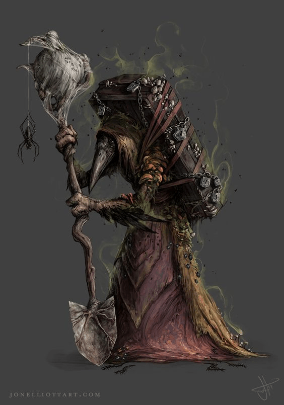

Resumen
Título: Ayudante de Athen
Afiliación: Athen
Lugar de Origen o donde fué conocido: Khundrukar
Edad: ???
Raza: Kenku
Clase: ???
Tamaño: Medium
Apariencia
Kenku que carga un cofre/ataud como mochila, en el que carga hierbas y materiales para hacer pociones. Lleva consigo una pala y esta vestido en un robe.
Ebuhg
Ebuhg conoció a las tortugas, Kairon, y a Ophiriel en Khundrukar. Lo encontraron tratando de llevarse las escamas de oro que decoraban la parte de atrás del trono de Durgeddin. Ebuhg les contó que Athen lo envió a buscarlos y a ayudarlos, y también lo envió para encontrar un Wand of Paralysis en Khundrukar. Subió a las tortugas a nivel 4 en Khundrukar, y subió al grupo a nivel 5 en uno de los escondites de Athen, después de llevarlos ahí.